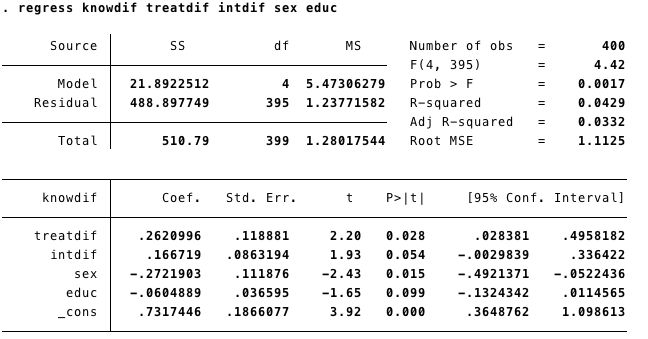
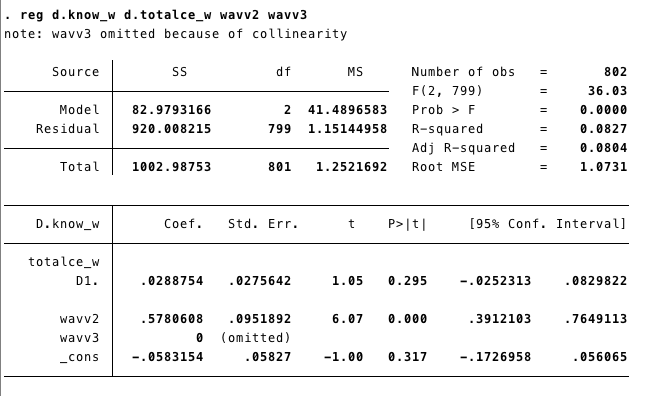
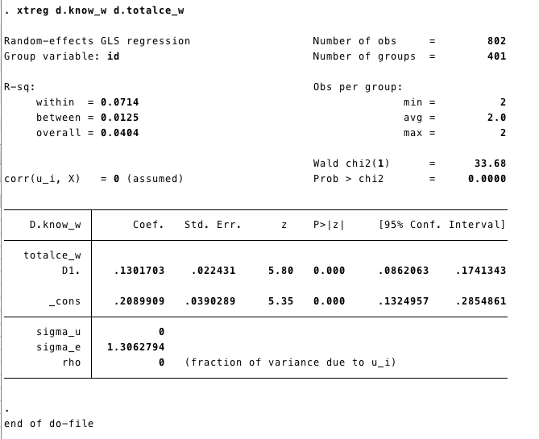
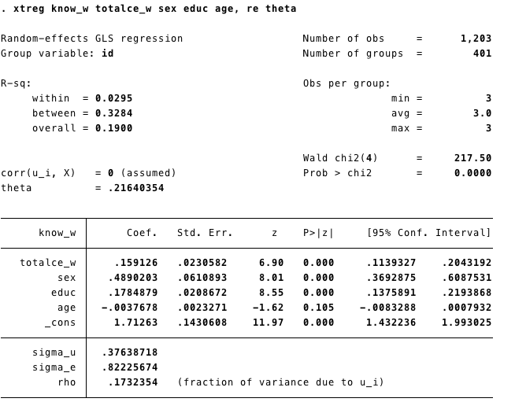
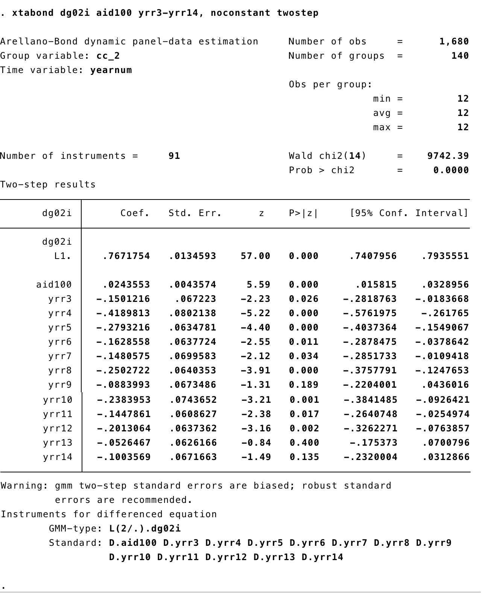

Econometrics
1 Within estimators models
1.1 First Difference two waves
Model:
\[ Y_{it}-Y_{i(t-1)} = X_{1i}-X_{1i(t-1)}+X_{2i}-X_{2i(t-1)}+ \epsilon_i-\epsilon_{i(t-1)}\]
or (Multiwave)
\[ \Delta Y_i= \Delta X_{1i} + \Delta X_{2i} + .. \Delta \epsilon_i\]
Data details
We are going to retrieve the data Finkel-Smith 2011. You can find more details about the data here Datas
This data is in wide format. We will create two variables
- Knowdif (\(\Delta Knowledge\)): difference in knowledge between before and after treatment
- newtreat_ww2 (\(\Delta Treatment\)): binary variable, “1” if the subject got the treatment.
1.1.1 STATA
- Creating the variables:
gen knowdif=know_w2-know_w1
gen treatdif=newtreat_ww2-newtreat_ww1
gen intdif=interest_w2-interest_w1- Runing the models
FD_1: First Difference without controls

FD_2: First Difference with controls

We can add time invariant variables in our model. However the interpretation is not straightforward. For example, in this case, sex and education have negative effects on change in knowledge. This could mean three different things:
- Women increase more on knwoledge than men, and less educated subjects increase more than highly educated.
- Or: sex and education had greater effects on levels of knowledge at time 1 than time 2.
- Or: sex and education differences were stronger at time 1 than time 2.1.1.2 R
Now we replicate the models FD_1 and FD_2 using R.
- First, we get the data using the function “import” (package rio).
- Then we add the variables using “$”.
data=import("./datasets/Kenya.3wave wide.2017.dta")
data$Knowdif=data$know_w2-data$know_w1 ## Variable Knowdif
data$treatdif=data$newtreat_ww2-data$newtreat_ww1 ## Vairable treatdifPackages as "dplyr" or "tydr" are giving us more options for data management.
For instance, we can do everything in "one" line of code.
```%>%```
(it means: "throw the object/output from the left in to the next function") - In this code below we import the dataset and then “throw” it to the function “mutate” to create new variables (Knowdif and treatdif).
- The output is the same.
Running the models
First option: Create and object that contains all the information of the model and then ask for the summary of the model.
- The function “lm” means “linear model” and it does all the estimation process of the linear model. The dependent and independent variables are separated by “~”, and then, after the coma, we called the data.
- The function
summaryallows us to get relevant information of the model.
##
## Call:
## lm(formula = Knowdif ~ treatdif, data = data)
##
## Residuals:
## Min 1Q Median 3Q Max
## -3.6384 -0.6384 0.3616 0.6154 3.6154
##
## Coefficients:
## Estimate Std. Error t value Pr(>|t|)
## (Intercept) 0.3846 0.0987 3.897 0.000114 ***
## treatdif 0.2538 0.1201 2.114 0.035176 *
## ---
## Signif. codes: 0 '***' 0.001 '**' 0.01 '*' 0.05 '.' 0.1 ' ' 1
##
## Residual standard error: 1.125 on 399 degrees of freedom
## Multiple R-squared: 0.01107, Adjusted R-squared: 0.008593
## F-statistic: 4.467 on 1 and 399 DF, p-value: 0.03518- The object “m1” it has more information that was showed in the summary output. For instance, if we want an analysis of variance of the model we can get that with the function “aov”.
## Call:
## aov(formula = FD1)
##
## Terms:
## treatdif Residuals
## Sum of Squares 5.6574 505.3301
## Deg. of Freedom 1 399
##
## Residual standard error: 1.125385
## Estimated effects may be unbalanced## Df Sum Sq Mean Sq F value Pr(>F)
## treatdif 1 5.7 5.657 4.467 0.0352 *
## Residuals 399 505.3 1.266
## ---
## Signif. codes: 0 '***' 0.001 '**' 0.01 '*' 0.05 '.' 0.1 ' ' 1Another option is to run all in one line of code, which could be done using the “%>%”. We throw the linear model into the function summary, in this case we are not saving any object in the memory.
##
## Call:
## lm(formula = data$Knowdif ~ data$treatdif, data = data)
##
## Residuals:
## Min 1Q Median 3Q Max
## -3.6384 -0.6384 0.3616 0.6154 3.6154
##
## Coefficients:
## Estimate Std. Error t value Pr(>|t|)
## (Intercept) 0.3846 0.0987 3.897 0.000114 ***
## data$treatdif 0.2538 0.1201 2.114 0.035176 *
## ---
## Signif. codes: 0 '***' 0.001 '**' 0.01 '*' 0.05 '.' 0.1 ' ' 1
##
## Residual standard error: 1.125 on 399 degrees of freedom
## Multiple R-squared: 0.01107, Adjusted R-squared: 0.008593
## F-statistic: 4.467 on 1 and 399 DF, p-value: 0.03518Now the model FD2:
We can add more independent/explanatory variables using “+”.
##
## Call:
## lm(formula = Knowdif ~ treatdif + intdif + sex + educ, data = data)
##
## Residuals:
## Min 1Q Median 3Q Max
## -3.5859 -0.6457 0.0209 0.5808 3.3664
##
## Coefficients:
## Estimate Std. Error t value Pr(>|t|)
## (Intercept) 0.73174 0.18661 3.921 0.000104 ***
## treatdif 0.26210 0.11888 2.205 0.028049 *
## intdif 0.16672 0.08632 1.931 0.054146 .
## sex -0.27219 0.11188 -2.433 0.015419 *
## educ -0.06049 0.03660 -1.653 0.099140 .
## ---
## Signif. codes: 0 '***' 0.001 '**' 0.01 '*' 0.05 '.' 0.1 ' ' 1
##
## Residual standard error: 1.113 on 395 degrees of freedom
## (1 observation deleted due to missingness)
## Multiple R-squared: 0.04286, Adjusted R-squared: 0.03317
## F-statistic: 4.422 on 4 and 395 DF, p-value: 0.001655The interpretation is the same stated above.
1.2 Multiwave First Difference
With the data in long format we can run a Multi Wave First Difference Model:
\[ \Delta Y_i= \Delta X_{1i} + \Delta X_{2i} + .. \Delta \epsilon_i\]
1.2.1 STATA
In STATA first we set the data as panel with xtset and then we run the model using d before each variable. This will tell STATA to take the difference of said variable at its previous time and include it in the model.
MWFD1: Multiwave First Difference without waves

MWFD2: Multiwave First Difference controling by waves(time)
We can run this model controling for the “trend” effect adding the waves.
tab wave, gen(wavv) #//this generates two variables, one for each wave
reg d.know_w d.totalce_w wavv2 wavv3 #// The new model
If our data is in a long format, we can also use the
xtreg command.
xtsetSets the data as panel.

1.2.2 R
In R we can use the plm package to run a Multiwave First Difference
MWFD1: Multiwave First Difference without waves
First, we call the package plm. Remember we already called the package rio in the step before.
Second, we import the data base using “import”, as we did in our previous step here
plmis the function for panel model. As in the linear model, the first element on the function is the model(formula)know_w~totalce_w+age+educ+sex.Variables are added using +. Then we include the data
data =K_long. - The third element in our code is the “index”index = c("id", "wave"), which does the same job that “xtset” in STATA.Finally, we need to specified the type of model
model = "fd". We have several options here that we will be unveiling as we progress.summary(MWFD1)shows us the results.
library(plm)
K_long<-import("~/Dropbox/Finkel-Incio/PS2701 Stata Files/Unit 1 -- Causal Inference and Econometrics/Kenya.3wave long.2017.dta") ### Here I'm importing the data. MWFD1<-plm(know_w~totalce_w+age+educ+sex,data =K_long,
index = c("id", "wave"),
model = "fd")
summary(MWFD1)## Oneway (individual) effect First-Difference Model
##
## Call:
## plm(formula = know_w ~ totalce_w + age + educ + sex, data = K_long,
## model = "fd", index = c("id", "wave"))
##
## Balanced Panel: n = 401, T = 3, N = 1203
## Observations used in estimation: 802
##
## Residuals:
## Min. 1st Qu. Median 3rd Qu. Max.
## -3.469332 -0.599502 -0.078821 0.791009 3.791009
##
## Coefficients:
## Estimate Std. Error t-value Pr(>|t|)
## (Intercept) 0.208991 0.039029 5.3548 1.120e-07 ***
## totalce_w 0.130170 0.022431 5.8031 9.377e-09 ***
## ---
## Signif. codes: 0 '***' 0.001 '**' 0.01 '*' 0.05 '.' 0.1 ' ' 1
##
## Total Sum of Squares: 1003
## Residual Sum of Squares: 962.47
## R-Squared: 0.040395
## Adj. R-Squared: 0.039196
## F-statistic: 33.6764 on 1 and 800 DF, p-value: 9.3768e-09MWFD2: Multiwave First Difference controling by waves(time)
First, we need to create a dummy for each wave. There are different ways to create dummy variables. We are going to use the function mutate from dplyr. We have used that function here
K_long<-K_long%>%mutate(wavv1=ifelse(wave==1,1,0),
wavv2=ifelse(wave==2,1,0),
wavv3=ifelse(wave==3,1,0))Now we can include waves in the model. Two waves are omited due to multicoliniarity.
FDMW2<-plm(know_w~totalce_w+wavv1+wavv2,data =K_long,
index = c("id", "wave"),
model = "fd")
summary(FDMW2)## Oneway (individual) effect First-Difference Model
##
## Call:
## plm(formula = know_w ~ totalce_w + wavv1 + wavv2, data = K_long,
## model = "fd", index = c("id", "wave"))
##
## Balanced Panel: n = 401, T = 3, N = 1203
## Observations used in estimation: 802
##
## Residuals:
## Min. 1st Qu. Median 3rd Qu. Max.
## -3.577496 -0.606372 0.087191 0.480255 3.480255
##
## Coefficients: (1 dropped because of singularities)
## Estimate Std. Error t-value Pr(>|t|)
## (Intercept) -0.058315 0.058270 -1.0008 0.3172
## totalce_w 0.028875 0.027564 1.0476 0.2952
## wavv1 -0.578061 0.095189 -6.0728 1.943e-09 ***
## ---
## Signif. codes: 0 '***' 0.001 '**' 0.01 '*' 0.05 '.' 0.1 ' ' 1
##
## Total Sum of Squares: 1003
## Residual Sum of Squares: 920.01
## R-Squared: 0.082732
## Adj. R-Squared: 0.080436
## F-statistic: 36.0325 on 2 and 799 DF, p-value: 1.0404e-151.3 Simple FE
Two more common models:
\[Y_{it}=\alpha + \beta_1X_{1it}+...\beta_kX_{ikt}+\beta_mZ_i+c_1D_1+c_2D_2+c_{n-1}D_{n-1}+e_{it}\]
In the model above we add a dummy variable (“D”) for each unit; this model is common called (“Least Squares Dummy Variables”). Then each unite will have its own intercept. For instance (\(\alpha +c1\)) for unite 1. A drawback with this model is that it is too computationally demanding, especially if we have a large number of units.
The most common model is the Fixed Effect model:
\[Y_{it}-\bar{Y_i}=\beta_i(X_{1it}-\bar{X}_{1i})+...+ \beta_k(X_{kit}-\bar{X}_{ki})+ \epsilon_{it}\]
These models control for the variation between units and only use the within estimators.
To estimate these models we are going to use the data from Finkel-Smith 2011 in its long format. You can download it here:
- You can find more details about the data here Datas
1.3.1 STATA
xtset sets the data as panel.
gen creates or generates a new variable “time” (starts in 0)
Runing the model
Know_w= level of knowledge.tatalce_w=femeans fixed effect

Time invariants covariates were eliminated from the model (because they do not vary within subjects!)
1.3.2 R
There are several packages that can help us to estimate panel models. There is some overlapping, as some packages can take a specific approach for a given problem. For instance plm was created by econometricians and panelR by a sociologist. The best practice is to use the package that can help us with our analysis and not to get attached to any in particular.
Here is a good post from panelR’s author comparing his package with plm. Post
R- plm
- If you hadn’t uploaded the dataset before remember:
- First, we call the package.
- Second, we import the database using “import”
plmis the function for panel model. As the linear model, the first element is the modelknow_w~totalce_w+age+educ+sex. Variables are added using +. then we include the datadata =K_long. The third element in our code is the “index”index = c("id", "wave")which does the same job that “xtset” in STATA. Finally, we need to specify the type of modelmodel = "within". We have several options here, that we are unveiling as we progress.summary(FE)shows us the results.
We do not have to call the package everytime we run a function, only once in a session.
For instance we called library(rio) before, therefore we do not need to call it againK_long<-import("~/Dropbox/Finkel-Incio/PS2701 Stata Files/Unit 1 -- Causal Inference and Econometrics/Kenya.3wave long.2017.dta")
FE<-plm(know_w~totalce_w+age+educ+sex,data =K_long,
index = c("id", "wave"),
model = "within")
summary(FE)## Oneway (individual) effect Within Model
##
## Call:
## plm(formula = know_w ~ totalce_w + age + educ + sex, data = K_long,
## model = "within", index = c("id", "wave"))
##
## Balanced Panel: n = 401, T = 3, N = 1203
##
## Residuals:
## Min. 1st Qu. Median 3rd Qu. Max.
## -2.53689 -0.37022 0.00000 0.41348 2.08652
##
## Coefficients:
## Estimate Std. Error t-value Pr(>|t|)
## totalce_w 0.12978 0.02632 4.9309 9.951e-07 ***
## ---
## Signif. codes: 0 '***' 0.001 '**' 0.01 '*' 0.05 '.' 0.1 ' ' 1
##
## Total Sum of Squares: 558
## Residual Sum of Squares: 541.56
## R-Squared: 0.029461
## Adj. R-Squared: -0.45642
## F-statistic: 24.3142 on 1 and 801 DF, p-value: 9.9511e-07The summary of the model does not give us the “intercept”. STATA estimates the intercept running the model after adding the overall sample mean for Y and X to the demeaned X and Y.
plm has a function to obtain it
## (overall_intercept)
## 2.572018
## attr(,"se")
## [1] 0.0279536In this case the result is the same as the output from the STATA command.
R- panelR
- First, we call the package ‘panelR’ before using it.
- We “panel” our data
panel_data(K_long, id=id, wave=wave). We created a new object (K_long_p). We could also replace the previous one.
## # Panel data: 6 x 17
## # entities: id [2]
## # wave variable: wave [1, 2, 3 (3 waves)]
## id wave wave1 treat newtreat_ww evertreat totalce_w talknum_w
## <fct> <dbl> <dbl> <dbl> <dbl> <dbl> <dbl> <dbl>
## 1 10452 1 0 1 0 1 0 0
## 2 10452 2 1 1 1 1 1 1
## 3 10452 3 2 1 0 1 0 0
## 4 10455 1 0 1 0 1 0 0
## 5 10455 2 1 1 1 1 1 3
## 6 10455 3 2 1 0 1 0 0
## # … with 9 more variables: interest_w <dbl>, media_w <dbl>, know_w <dbl>,
## # polpart_w <dbl>, polprt2_w <dbl>, sex <dbl>, age <dbl>, educ <dbl>,
## # totalce_mn <dbl>- Second, we run the model using the function “wbm”. The structure is the same as “plm”.
## Warning: Constants are ignored with within model specifications.## MODEL INFO:
## Entities: 401
## Time periods: 1-3
## Dependent variable: know_w
## Model type: Linear mixed effects
## Specification: within
##
## MODEL FIT:
## AIC = 3314.29, BIC = 3334.66
## Pseudo-R² (fixed effects) = 0.01
## Pseudo-R² (total) = 0.33
## Entity ICC = 0.32
##
## --------------------------------------------------------
## Est. S.E. t val. d.f. p
## ----------------- ------ ------ -------- -------- ------
## (Intercept) 2.65 0.04 71.67 400.00 0.00
## totalce_w 0.13 0.03 4.93 801.00 0.00
## --------------------------------------------------------
##
## p values calculated using Satterthwaite d.f.
##
## RANDOM EFFECTS:
## ------------------------------------
## Group Parameter Std. Dev.
## ---------- ------------- -----------
## id (Intercept) 0.5664
## Residual 0.8223
## ------------------------------------1.4 FE, robust standard errors (RSE).
We can deal with the heteroskedasticity of the error terms obtaining the “ROBUST” standard errors. Panel analysis has potential problems with the error terms produced by unit-level clustering.

1.4.2 R
R- plm
- We have more than one option to get the robust standard errors from our model.
- With PLM we can add the argument
vcovinsummary() - Remember: our model was stored in the object FE above.
## Oneway (individual) effect Within Model
##
## Note: Coefficient variance-covariance matrix supplied: vcovHC(FE)
##
## Call:
## plm(formula = know_w ~ totalce_w + age + educ + sex, data = K_long,
## model = "within", index = c("id", "wave"))
##
## Balanced Panel: n = 401, T = 3, N = 1203
##
## Residuals:
## Min. 1st Qu. Median 3rd Qu. Max.
## -2.53689 -0.37022 0.00000 0.41348 2.08652
##
## Coefficients:
## Estimate Std. Error t-value Pr(>|t|)
## totalce_w 0.129781 0.023403 5.5454 3.984e-08 ***
## ---
## Signif. codes: 0 '***' 0.001 '**' 0.01 '*' 0.05 '.' 0.1 ' ' 1
##
## Total Sum of Squares: 558
## Residual Sum of Squares: 541.56
## R-Squared: 0.029461
## Adj. R-Squared: -0.45642
## F-statistic: 30.7516 on 1 and 400 DF, p-value: 5.3379e-08- Another option is to use a generic function to test our coeficients. The function
coeftestfrom the package lmtest performs z and t Wald tests (significance) of the estimated coefficients. - The argument vcov allows us to select a particular variance-covariance matrix.
##
## t test of coefficients:
##
## Estimate Std. Error t value Pr(>|t|)
## totalce_w 0.129781 0.023413 5.5431 4.035e-08 ***
## ---
## Signif. codes: 0 '***' 0.001 '**' 0.01 '*' 0.05 '.' 0.1 ' ' 1- Now we get the robust standard error for the intercept.
## (overall_intercept)
## 2.572018
## attr(,"se")
## [1] 0.01318144R- panelR
- Panel R has not yet implemented yet a easy way to test the coefficients with Robust Standard Error.
1.5 Random Effects Models
- Also known as Random Intercept
1.5.1 STATA
- We also use xtreg for random effects model.
- We add theta (\(\theta\)) in the line. Because \(\theta\) gives us an idea of the error term’s compositions. As \(\theta\) (theta) gets closer to 1, it means that more and more of the composite error variance is made up of \(U_i\) unit-level or “between” variance. Where \(\theta\) closser to 1 the RE models reduce to a FE model

- We can also add Robust Standard Errors to the model. We added
vce(cluster id)same as we did with the Fixed Effects model.
1.5.2 R
- We run the model using the function plm from the package with the same name.
- The code follows the same structure as the FE or Multiwave First Difference showed above.
- The difference is in model we select random:
model = "random"
RE<-plm(know_w~totalce_w+age+educ+sex,data =K_long,
index = c("id", "wave"),
model = "random")
summary(RE)## Oneway (individual) effect Random Effect Model
## (Swamy-Arora's transformation)
##
## Call:
## plm(formula = know_w ~ totalce_w + age + educ + sex, data = K_long,
## model = "random", index = c("id", "wave"))
##
## Balanced Panel: n = 401, T = 3, N = 1203
##
## Effects:
## var std.dev share
## idiosyncratic 0.6761 0.8223 0.827
## individual 0.1417 0.3764 0.173
## theta: 0.2164
##
## Residuals:
## Min. 1st Qu. Median 3rd Qu. Max.
## -2.5409793 -0.5741804 -0.0045051 0.6213067 2.1813203
##
## Coefficients:
## Estimate Std. Error z-value Pr(>|z|)
## (Intercept) 1.7126305 0.1430608 11.9713 < 2.2e-16 ***
## totalce_w 0.1591260 0.0230582 6.9011 5.162e-12 ***
## age -0.0037678 0.0023271 -1.6191 0.1054
## educ 0.1784879 0.0208672 8.5535 < 2.2e-16 ***
## sex 0.4890203 0.0610893 8.0050 1.195e-15 ***
## ---
## Signif. codes: 0 '***' 0.001 '**' 0.01 '*' 0.05 '.' 0.1 ' ' 1
##
## Total Sum of Squares: 960.45
## Residual Sum of Squares: 812.87
## R-Squared: 0.15366
## Adj. R-Squared: 0.15083
## Chisq: 217.505 on 4 DF, p-value: < 2.22e-16summary(RE)give us the basic information from the model.- The results are the same as the STATA output, and plm give us \(\theta\) by default.
Robust standard errors
- We can get the **robust standard errors adding the argument in the function
summary()as we did with FE models
## Oneway (individual) effect Random Effect Model
## (Swamy-Arora's transformation)
##
## Note: Coefficient variance-covariance matrix supplied: vcovHC(RE)
##
## Call:
## plm(formula = know_w ~ totalce_w + age + educ + sex, data = K_long,
## model = "random", index = c("id", "wave"))
##
## Balanced Panel: n = 401, T = 3, N = 1203
##
## Effects:
## var std.dev share
## idiosyncratic 0.6761 0.8223 0.827
## individual 0.1417 0.3764 0.173
## theta: 0.2164
##
## Residuals:
## Min. 1st Qu. Median 3rd Qu. Max.
## -2.5409793 -0.5741804 -0.0045051 0.6213067 2.1813203
##
## Coefficients:
## Estimate Std. Error z-value Pr(>|z|)
## (Intercept) 1.7126305 0.1593532 10.7474 < 2.2e-16 ***
## totalce_w 0.1591260 0.0206163 7.7184 1.178e-14 ***
## age -0.0037678 0.0027063 -1.3922 0.1639
## educ 0.1784879 0.0241090 7.4034 1.328e-13 ***
## sex 0.4890203 0.0632721 7.7288 1.085e-14 ***
## ---
## Signif. codes: 0 '***' 0.001 '**' 0.01 '*' 0.05 '.' 0.1 ' ' 1
##
## Total Sum of Squares: 960.45
## Residual Sum of Squares: 812.87
## R-Squared: 0.15366
## Adj. R-Squared: 0.15083
## Chisq: 260.397 on 4 DF, p-value: < 2.22e-161.6 Hausman test
If you are unsure about if to use FE or RE, the Hausman Test (HT) can help you to decide. The HT tests if the estimates obtained by the Fixed Effect models are the same as those from the Random Effect model. If they are the same, RE it is more efficient.
The test statistic is :
\[ \frac{\beta_{Fe}-\beta_{RE}}{var(\beta_{FE})-var(\beta_{RE})} \]
With a \(\chi^2\) (Chi-square) with degree of freedom equal to the number of time-varying independent variables.
1.6.1 STATA
To conduct the Hausman Test we need to store the coefficient from our Fixed Effect and Random Effects model.
quiis to estimate the model but no showing the output.estimate storesave the estimates from the model in the “object” fixed and random respectively.
qui xtreg know_w totalce_w sex educ age, fe
estimates store fixed
qui xtreg know_w totalce_w sex educ age, re theta
estimates store randomWe conduct the Hausman test using the command: hausman fixed random

1.6.2 R
The package plm has a function called phtest to conduct the Hausman test.
- We have created the models before, but we will do it again to be sure we are comparing the right estimators.
FE<-plm(know_w~totalce_w+age+educ+sex,data =K_long,
index = c("id", "wave"),
model = "within")
RE<-plm(know_w~totalce_w+age+educ+sex,data =K_long,
index = c("id", "wave"),
model = "random")- Now we can conduct the Hausman test.
##
## Hausman Test
##
## data: know_w ~ totalce_w + age + educ + sex
## chisq = 5.3468, df = 1, p-value = 0.02076
## alternative hypothesis: one model is inconsistentAnother way:
phtestlet us run the test withour re-running the modelWe create the object model that contains the name of the dependent and independent variables (separated by ~)
modht= know_w~totalce_w+age+educ+sex #an object with the model
phtest(modht, data=K_long) #We can run the test with the model. ##
## Hausman Test
##
## data: modht
## chisq = 5.3468, df = 1, p-value = 0.02076
## alternative hypothesis: one model is inconsistent2 Hybrid Models
2.1 Bell and Jones Model with RSE
- It includes the mean of the time variant variables into an RE model
- First we generate the mean of totalce_w by group and then include it in the model.
2.1.1 STATA
egen totalce_mn=mean(totalce_w), by (id) // egen creates new variables
xtreg polpart_w totalce_w totalce_mn sex educ age wavv2 wavv3, re vce(cluster id) 
2.1.2 R
First, we create totalce_mn, which is the mean of totalce_w by group. To do this, we will use the function mutate from the package dplyr.
We are going to use the dummys variables for wave. We had created those dummies using mutate for the Multiwave First Difference model here
We can do it again, just in case:
K_long<-K_long%>%mutate(wavv1=ifelse(wave==1,1,0),
wavv2=ifelse(wave==2,1,0),
wavv3=ifelse(wave==3,1,0))K_long<-K_long%>%group_by(id)%>%
mutate(totalce_mn=mean(totalce_w))%>%
ungroup() # if you don't ungroup you may encounter the following error:
#Can't join on '.rows' x '.rows' because of incompatible types (list / list)We include the mean of totalce_w by group in our Random Effects model. Using plm we obtained the same results as STATA
In
summarywe added the vcov option to request the robust standard errors.
HY<-plm(polpart_w~totalce_w+totalce_mn+age+educ+sex+
wavv2+wavv3,data =K_long,
index = c("id", "wave"),
model = "random") ##
summary(HY, vcov = vcovHC(HY))## Oneway (individual) effect Random Effect Model
## (Swamy-Arora's transformation)
##
## Note: Coefficient variance-covariance matrix supplied: vcovHC(HY)
##
## Call:
## plm(formula = polpart_w ~ totalce_w + totalce_mn + age + educ +
## sex + wavv2 + wavv3, data = K_long, model = "random", index = c("id",
## "wave"))
##
## Balanced Panel: n = 401, T = 3, N = 1203
##
## Effects:
## var std.dev share
## idiosyncratic 1.9910 1.4110 0.73
## individual 0.7350 0.8573 0.27
## theta: 0.3112
##
## Residuals:
## Min. 1st Qu. Median 3rd Qu. Max.
## -3.68686 -1.01358 -0.16687 0.93524 4.30400
##
## Coefficients:
## Estimate Std. Error z-value Pr(>|z|)
## (Intercept) 0.9021205 0.2702031 3.3387 0.0008418 ***
## totalce_w 0.1405623 0.0561277 2.5043 0.0122684 *
## totalce_mn 0.6240904 0.1101404 5.6663 1.459e-08 ***
## age 0.0188290 0.0045295 4.1570 3.225e-05 ***
## educ 0.0948487 0.0402003 2.3594 0.0183043 *
## sex 0.6913654 0.1200645 5.7583 8.497e-09 ***
## wavv2 -0.6283889 0.1261004 -4.9832 6.253e-07 ***
## wavv3 -0.2548048 0.1105074 -2.3058 0.0211235 *
## ---
## Signif. codes: 0 '***' 0.001 '**' 0.01 '*' 0.05 '.' 0.1 ' ' 1
##
## Total Sum of Squares: 2703.8
## Residual Sum of Squares: 2379.2
## R-Squared: 0.12004
## Adj. R-Squared: 0.11489
## Chisq: 167.474 on 7 DF, p-value: < 2.22e-16Hybrid model using panelR package
panelr has a convenient way to estimate an hybrid model.
- First we need to panel the data:
- The structure of the model is the following:
our varying variables are : totalce_w , and wavv2 + wavv3
Time invariant variables: age, educ, sex
Random effect: id
## fixed-effect model matrix is rank deficient so dropping 2 columns / coefficients## MODEL INFO:
## Entities: 401
## Time periods: 1-3
## Dependent variable: polpart_w
## Model type: Linear mixed effects
## Specification: within-between
##
## MODEL FIT:
## AIC = 4585.88, BIC = 4636.8
## Pseudo-R² (fixed effects) = 0.16
## Pseudo-R² (total) = 0.39
## Entity ICC = 0.27
##
## WITHIN EFFECTS:
## -------------------------------------------------------
## Est. S.E. t val. d.f. p
## --------------- ------- ------ -------- -------- ------
## totalce_w 0.14 0.06 2.53 799.00 0.01
## wavv2 -0.63 0.12 -5.16 799.00 0.00
## wavv3 -0.25 0.10 -2.49 799.00 0.01
## -------------------------------------------------------
##
## BETWEEN EFFECTS:
## -------------------------------------------------------------
## Est. S.E. t val. d.f. p
## ---------------------- ------ ------ -------- -------- ------
## (Intercept) 0.61 0.28 2.16 396.00 0.03
## imean(totalce_w) 0.76 0.09 8.25 396.00 0.00
## age 0.02 0.00 4.15 396.00 0.00
## educ 0.09 0.04 2.33 396.00 0.02
## sex 0.69 0.12 5.80 396.00 0.00
## -------------------------------------------------------------
##
## p values calculated using Satterthwaite d.f.
##
## RANDOM EFFECTS:
## ------------------------------------
## Group Parameter Std. Dev.
## ---------- ------------- -----------
## id (Intercept) 0.8573
## Residual 1.411
## ------------------------------------3 Dynamic Models
Panel econometric models can include dynamic effects. There are different kinds of dynamic models those can include lag dependent variable, lag independent
\[ Y_{it}= \alpha+ \beta_1Y_{it-1}+\beta_2X_{it}+\beta_3X_{it-1}+...U_{it}+\epsilon_{it} \]
The problem to include the lag dependent variable is that the estimator would be biased because the lag dependent variable is correlated with \(U\) (the time invariant unobserved component of the error term)
The most well know approach is the proposeb by Arellano and Bond that use the lag variables as instruments.
3.0.1 STATA
- We are going to use the data XXXX. More details about the data here: R packages and datasets
- First, we set the data as panel data with
xtset - Second, we are going to creat a dummy variable for each year to use them as control variables using the command
tab - Finally, we use the command
xtabondto estimate the Arellano Bond (1991) model also known as “Generalized Method of Moments (GMM)”
Output

3.0.2 R
- For GMM models we can use the function
pgmmfrom the packageplm. - First, lets get the data with the function
importfrom the packagerio
- Now the model. The basic model follows the same estructure of the lineal models we ran before:
~separates the dependent and independent variables - In this model we have
aid100and the lag ofdg02ias independent variables. - The other lags (from t-3 to t-14) are used as instruments. We add those using
|lag(dg02i,2:14) - We index
index=c("cname","year")to let R know the structure of our data. - We run the model in two steps, this is the same as STATA.
dynamic1<-pgmm(dg02i~ aid100+lag(dg02i,1)| lag(dg02i,2:14), data = demo,
index=c("cname","year"),
effect = "twoways", model = "twosteps")Output
## Twoways effects Two steps model
##
## Call:
## pgmm(formula = dg02i ~ aid100 + lag(dg02i, 1) | lag(dg02i, 2:14),
## data = demo, effect = "twoways", model = "twosteps", index = c("cname",
## "year"))
##
## Unbalanced Panel: n = 147, T = 1-14, N = 1960
##
## Number of Observations Used: 1669
##
## Residuals:
## Min. 1st Qu. Median Mean 3rd Qu. Max.
## -8.364290 -0.178830 0.000000 -0.000113 0.140986 7.908348
##
## Coefficients:
## Estimate Std. Error z-value Pr(>|z|)
## aid100 0.0251453 0.0057681 4.3593 1.305e-05 ***
## lag(dg02i, 1) 0.7717945 0.0518348 14.8895 < 2.2e-16 ***
## ---
## Signif. codes: 0 '***' 0.001 '**' 0.01 '*' 0.05 '.' 0.1 ' ' 1
##
## Sargan test: chisq(77) = 88.74848 (p-value = 0.16965)
## Autocorrelation test (1): normal = -5.172326 (p-value = 2.312e-07)
## Autocorrelation test (2): normal = 1.199462 (p-value = 0.23035)
## Wald test for coefficients: chisq(2) = 244.8409 (p-value = < 2.22e-16)
## Wald test for time dummies: chisq(12) = 19.4706 (p-value = 0.077787)- We can also test our coefficient using robust standard errors
## Twoways effects Two steps model
##
## Call:
## pgmm(formula = dg02i ~ aid100 + lag(dg02i, 1) | lag(dg02i, 2:14),
## data = demo, effect = "twoways", model = "twosteps", index = c("cname",
## "year"))
##
## Unbalanced Panel: n = 147, T = 1-14, N = 1960
##
## Number of Observations Used: 1669
##
## Residuals:
## Min. 1st Qu. Median Mean 3rd Qu. Max.
## -8.364290 -0.178830 0.000000 -0.000113 0.140986 7.908348
##
## Coefficients:
## Estimate Std. Error z-value Pr(>|z|)
## aid100 0.0251453 0.0057681 4.3593 1.305e-05 ***
## lag(dg02i, 1) 0.7717945 0.0518348 14.8895 < 2.2e-16 ***
## ---
## Signif. codes: 0 '***' 0.001 '**' 0.01 '*' 0.05 '.' 0.1 ' ' 1
##
## Sargan test: chisq(77) = 88.74848 (p-value = 0.16965)
## Autocorrelation test (1): normal = -5.172326 (p-value = 2.312e-07)
## Autocorrelation test (2): normal = 1.199462 (p-value = 0.23035)
## Wald test for coefficients: chisq(2) = 244.8409 (p-value = < 2.22e-16)
## Wald test for time dummies: chisq(12) = 19.4706 (p-value = 0.077787)